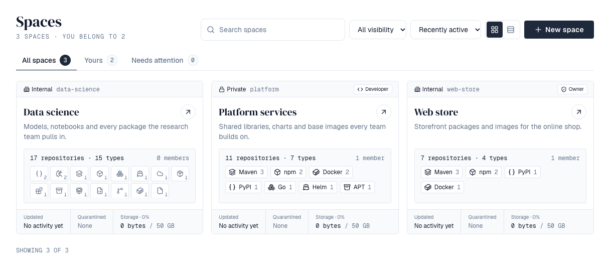
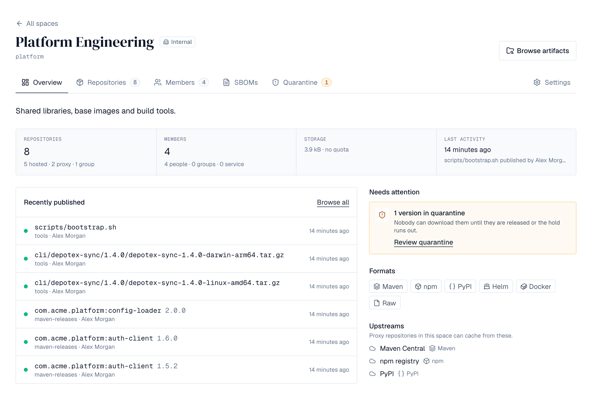
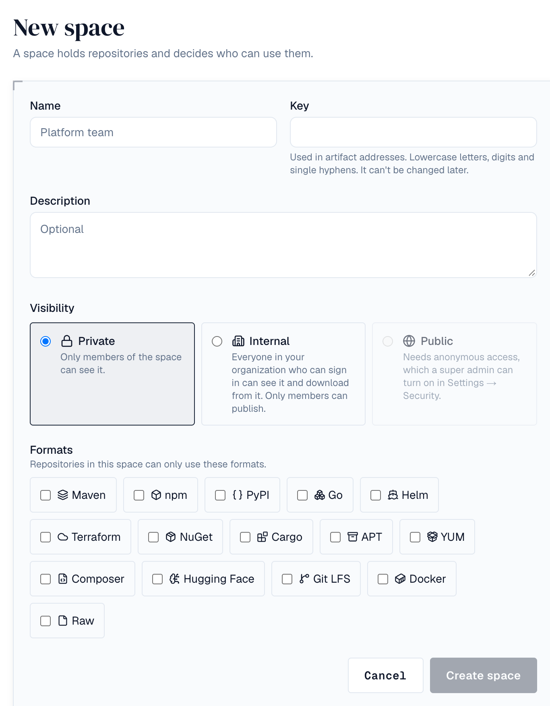
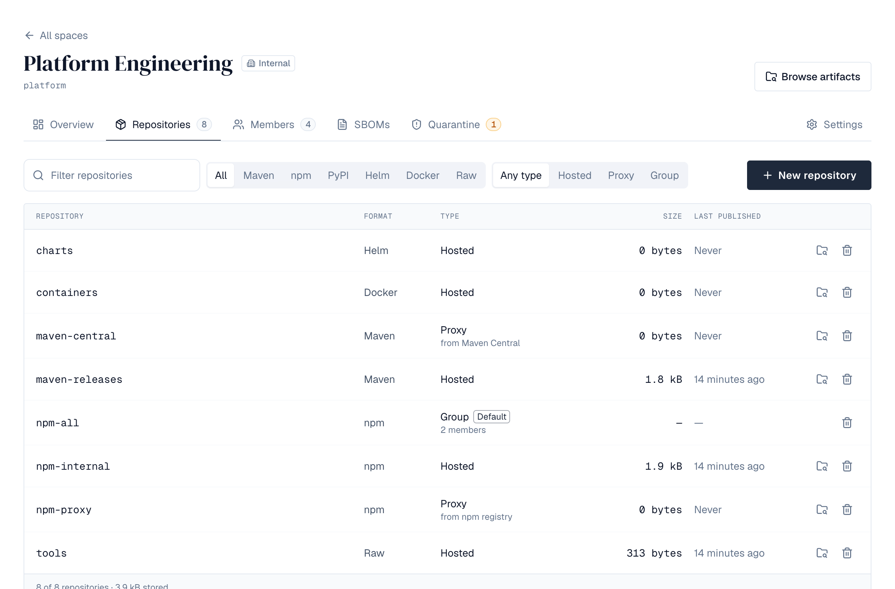
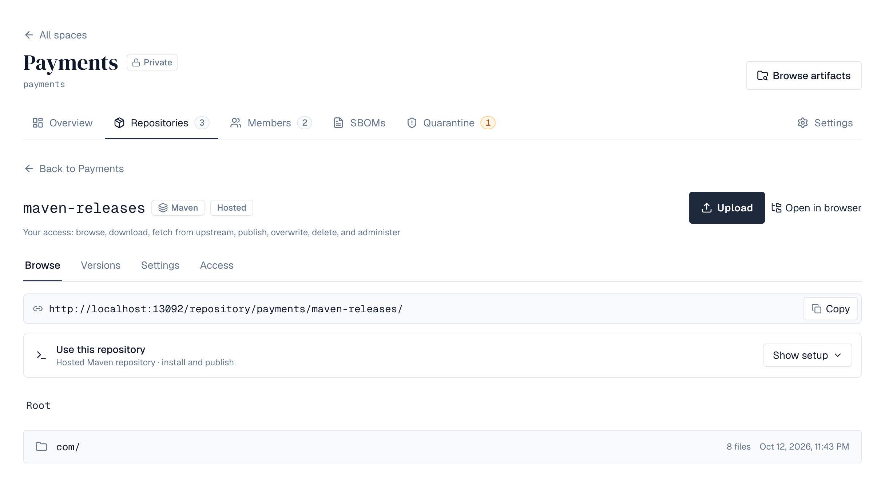
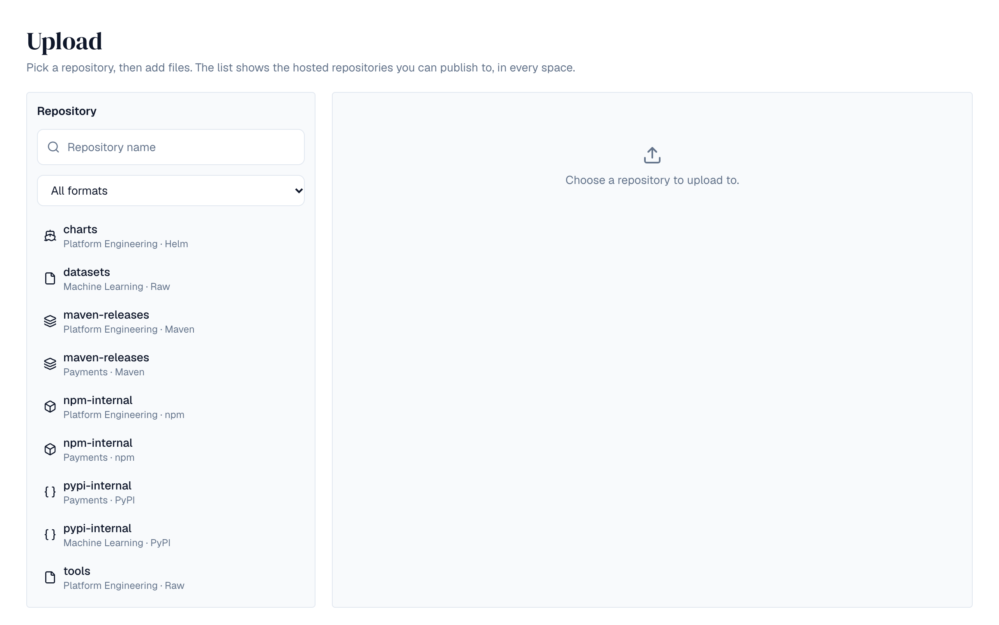
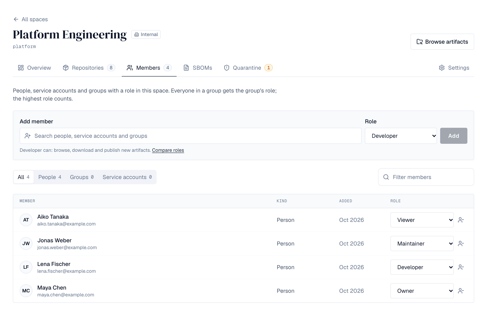

1. Overview
A space holds repositories and decides who can use them. Each space has its own members and roles, a visibility, and a list of package formats its repositories may use. Find your spaces under Spaces in the sidebar. Tabs show All spaces, Yours (where you hold a role) and Needs attention (storage at or past its quota's warning level, or a version in quarantine), each with how many it holds. Search by name or key, narrow to one visibility, and order by Recently active (the default: the space where a version was last stored or changed comes first) or Name. Show them as tiles or as a table (switch with the buttons beside the search; your browser remembers the choice). A tile shows the space's key, visibility and your role, its description, how many repositories and members it has, its formats, when it last changed, any quarantined versions, and how full it is (amber from the quota's warning level, 80% unless a super admin changed it, red when full). The table lists the same figures and, on All spaces, puts your spaces first and the others below. Spaces are available on every license tier, with no limit on how many.


2. List spaces from the API
Scripts can list spaces with the same choices as the page. Both calls answer only with spaces the caller can see.
| Request | Returns |
|---|---|
| GET /api/spaces?q=&visibility=&filter=&sort=&limit=&cursor= | A page of spaces. visibility is private, internal or public; filter is mine (spaces you hold a role in), others or attention; sort is name (the default) or activity (last change first). Follow pagination.nextCursor for the next page. |
| GET /api/space-counts?q=&visibility= | all, mine and attention: how many spaces each tab holds. |
Without signing in (public spaces while anonymous access is on), mine and attention aren't available.
3. Create a space
Only super admins create spaces. Choose + Create → Space in the top bar:
- Name — What people see, for example *Platform team*. You can change it later.
- Key — Filled in from the name; edit it if you like. The key appears in artifact addresses, so it can only use lowercase letters, digits and single hyphens (2–40 characters), must be unique, and can't be changed later. new, api, v2, admin, settings, search and static are reserved.
- Description — Optional.
- Visibility — Private (members only) or Internal (see below).
- Formats — The package formats repositories in this space may use, for example Maven and npm.

4. Visibility
| Visibility | Who can see the space and download from it | Who can publish |
|---|---|---|
| Private | Members only | Members with Developer or higher |
| Internal | Everyone who can sign in to your organization, and members | Members with Developer or higher |
| Public | Everyone who can sign in, and anyone at all while anonymous access is on | Members with Developer or higher |
People who can't see a private space get *not found* rather than *no access*, so its name doesn't leak. Requests without a sign-in get *not signed in* for anything they can't read. Super admins see every space.
A space can only be made public while a super admin has turned on Settings → Security → Anonymous access (see Users & directories). If anonymous access is turned off later, public spaces stay public, but only signed-in people can read them until it's back on.
Anonymous access is for package tools and scripts. The web pages still ask people to sign in.
5. Roles
Each role includes everything the one above it can do:
| Role | Can |
|---|---|
| Viewer | Browse the space and download artifacts |
| Developer | Also publish new artifacts (but not delete or overwrite them) and upload application SBOMs |
| Maintainer | Also delete artifacts, and manage the space's repositories and policies |
| Owner | Also manage members and settings, and delete the space |
Roles can be given to people, groups and service accounts. Someone in a group gets the group's role; if they have several roles in a space, the highest one counts. Changes take effect immediately on every server. API tokens can carry space permissions such as spaces:push; a token can still only do what its owner's role in that space allows.
6. Repositories
A space opens on its Overview: its description; the same figures with how they split (hosted, proxy and group repositories; people, groups and service accounts; what was published last and by whom); Recently published; Needs attention (versions held in quarantine, storage nearly full, upstreams proxy repositories can't reach), its formats and its upstreams. Browse artifacts at the top opens the browser on this space. Its tabs are Repositories, Members, Quarantine (with the number of versions held now) and Settings. The Repositories tab is a table you can filter by name, format and type, with each repository's size and when something was last published; proxy repositories whose upstream can't be reached say so (they keep serving what they have cached). Below it, each format's universal URL and default group. Maintainers and owners (and super admins) choose New repository, give it a name (lowercase letters, digits, dots, dashes and underscores; unique within the space; not a format's name such as maven or npm, which are the universal URLs), pick one of the space's formats and a type:
| Type | What it does |
|---|---|
| Hosted | Stores what is published to it. Every license tier. |
| Proxy | Fetches from an upstream (Maven Central, npm, Docker Hub, an internal mirror) and keeps a copy. Pro license or higher. The upstream must be on the space's list of upstreams and in the same format; it can't be deleted or taken off the list while a proxy repository uses it. |
| Group | Combines repositories of the format behind one address: downloads come from the first member that has the file, uploads go to a hosted member chosen by rules. Every license tier. See Repository groups. |

Select a repository to open it. Browse shows its folders and files. Selecting a file that belongs to a version opens that version in the artifact browser, where its Files tab has each file's details, checksums and delete; other files (indexes and metadata) show their size, downloads and checksums (SHA-256, SHA-1, MD5, SHA-512) in a dialog, with delete. Versions lists its versions.
7. Publish and download
Super admins also have Repositories in the left navigation: every repository of the installation, one section per space (with Browse space and Open space), each showing ten at a time. Filter by format (several at once, with how many repositories each has), type, space and name; Browse opens a repository in the browser, and the bin deletes it. Repositories made before spaces are listed last.


Package managers and scripts reach a repository at https://<depotex>/repository/<space>/<repository>/, and the space's default group for a format at its universal URL https://<depotex>/repository/<space>/<format>/. The repository's page shows the address and examples. Raw repositories hold any file at any path; people with Publish permission can also upload files from the repository's Browse tab, into the folder they're looking at:
curl -u "me:$DEPOTEX_TOKEN" --upload-file app.zip https://depotex.example.com/repository/my-space/files/tools/app.zip
curl -fO -u "me:$DEPOTEX_TOKEN" https://depotex.example.com/repository/my-space/files/tools/app.zip
curl -fs https://depotex.example.com/repository/my-space/files/tools/app.zip.sha256- Credentials: an API token (Profile → API tokens) as the password, with any username, or as a Bearer token; NuGet clients send it as the API key (X-NuGet-ApiKey). Downloads from public spaces need none while anonymous access is on.
- Publishing needs the Publish permission for a new path and Overwrite for an existing one; the repository's publishing setting, size limit and the space's upload rules and quota apply. Send the file's length (all package managers and curl do). To have the upload checked, send X-Checksum-Sha256, X-Checksum-Sha1 or X-Checksum-Md5.
- Downloads support resuming (byte ranges), caching (ETag) and checksum files: add .sha256, .sha1, .md5 or .sha512 to a file's path.
- A path ending in / lists that folder (JSON). DELETE removes a file (Delete permission).
8. Formats
How to set up each tool, the commands that work and each format's limits are on its own page: Maven, npm, PyPI, Docker and Raw. Supported formats compares them.
9. Proxy repositories
A proxy repository answers from its cache, and fetches from its upstream what it doesn't have (Pro). Its Settings decide how:
- Keep fetched files stores each file the first time it's asked for (it counts toward the space's quota); fetch every time stores nothing.
- Files are re-checked with the upstream after their age (Re-check artifacts after, Re-check metadata after); an unchanged file isn't downloaded again.
- Metadata paths (one pattern per line, such as dist/channel-*) are files the upstream changes in place although the format can't tell (raw files): they're re-checked at the metadata age. See Rust toolchains.
- Remember “not found” (minutes; 1440, a day, by default; 0 turns it off; at most 43200) saves asking the upstream again for files it doesn't have. Only a *not found* answer (404 or 410) is remembered, never an error, a timeout or refused credentials. It applies only to files with no copy here: a cached file is still served even if the upstream no longer has it. Every server shares what was remembered. A remembered file stays *not found* until the time is up, even if it appears upstream meanwhile (for example a version published minutes after a build asked for it), so keep the time short for upstreams that publish often.
- A HEAD request never downloads a file.
- Checksums: compare each fetched file with the checksum the upstream publishes; refuse mismatches, or serve them and log a warning.
- While the upstream is unreachable, cached files are served even past their age (Serve cached files…), and an upstream that keeps failing is paused for a while.
- Many requests for the same new file cause one fetch, across all servers.
- Going to the upstream needs the fetch from upstream permission (every role has it); without it, people only get what's cached. When the space is over its quota, files are passed through without being kept.
Behind a load balancer, route /repository/, /v2/ and /v1/search (Docker) straight to the backend servers for the best throughput on large files; the web frontend also forwards them.
10. Repository settings
Repository admins (space maintainers and owners, or people given the repository's Admin role) change these under the repository's Settings. The name, format and type can't change.
| Setting | Choices |
|---|---|
| Online | An offline repository refuses downloads and uploads. |
| Publishing (hosted) | Allow publishing and overwriting; allow publishing but never overwrite a file; or read-only. In a publish-once repository, uploading a file that's already there is refused as a conflict (409), which npm publish and dotnet nuget push --skip-duplicate expect. |
| Delete mode (NuGet, hosted) | Whether dotnet nuget delete unlists the version (the default, as nuget.org does) or deletes it. See NuGet repositories. |
| Versions | Releases only, snapshots only, or both (for formats that tell them apart, such as Maven -SNAPSHOT). |
| Layout | Strict refuses paths that don't follow the format's layout; permissive accepts any path. |
| Largest artifact | Overrides Settings → Repositories → Defaults and network for this repository. |
| Hide quarantined versions | Leave quarantined versions out of the version lists clients resolve from; by default they stay listed and downloading them fails with "quarantined". |
| Proxy (proxy repositories) | Keep fetched files or pass them through; how long artifacts and metadata are served before asking the upstream again; how long "not found" is remembered; what to do when a checksum doesn't match; pause an upstream that keeps failing; serve cached files while the upstream is down. |
These settings are saved now and apply as each package format arrives.
11. Repository access
Space roles apply to every repository in the space: viewers browse and download, developers also publish, maintainers and owners also overwrite, delete and administer. A repository's Access tab gives people more, on that repository only:
- Repository roles: Viewer (browse and download), Deployer (also publish), Maintainer (also overwrite and delete), Admin (also settings and access), for a user, service account or group.
- Path access: a repository role on the paths a content selector matches, for example deploy only under com/acme/team-x/**.
People with only repository access see the space with just those repositories. Access only ever adds to what space roles give.
12. Content selectors
Space owners manage content selectors in the space's Settings: a name and path patterns, one per line. ** matches across folders, * within one folder, ? one character; patterns don't start with a slash. They can also give path access in every repository of the space from there.
- A format can't be removed from a space while one of its repositories uses it.
- A space can't be deleted while it has repositories: delete them first.
- Super admins see every repository in the installation under Repositories in the sidebar, with the space each belongs to.
Creating, changing and deleting repositories raise depot.repository.create, depot.repository.update and depot.repository.delete; content selectors raise content_selector.create, .update, .delete, .grant and .revoke; deleting a file raises artifact.delete. Organization policies can restrict them (for example, allow only certain formats, or refuse proxy repositories), and all are recorded in the audit log.
13. Upload rules
Maintainers and owners decide, in the space's Settings under Upload rules, what may be stored in its repositories:
| Rule | What it does |
|---|---|
| Largest file | Refuses files larger than this. Empty means no limit. |
| Paths | An ordered list of allow and deny rules. Each has a pattern, a regular expression matched against the file's path in its repository, such as \.exe$ or ^com/acme/. The first rule whose pattern matches decides; When no rule matches decides the rest. A note you add is shown to whoever is refused. |
| Released versions can't be overwritten | Refuses uploading a file that already exists, unless its version is a snapshot. Snapshot versions is a regular expression; empty means versions ending in -SNAPSHOT. |
Try a file shows what the saved rules decide for a path, size and version, without storing anything.
Upload rules apply as soon as repositories in the space accept uploads; until then they can be prepared and tried out.
Changing the rules raises space.upload_rules.update and is recorded in the audit log. Every upload raises artifact.upload, which organization policies can also restrict.
14. Cleanup
Maintainers and owners add cleanup policies in the space's Settings under Cleanup. Every night each enabled policy moves matching versions to the trash, where they can be restored for 7 days (super admins can change this on the space-trash-purge job) before they're deleted for good.
| Setting | Meaning |
|---|---|
| Repositories | Which of the space's repositories it applies to; none ticked means all of them, including ones added later. |
| Formats | Only versions in repositories of these formats; none ticked means every format. |
| Repository types | Hosted and/or Proxy (cached copies); none ticked means both. |
| Release type | All versions, Releases only or Pre-releases only. Pre-releases are versions such as 1.0.0-rc.1 (npm, Go, Helm, NuGet), 1.0rc1 (PyPI) or 1.0-SNAPSHOT (Maven); other formats have none. |
| Keep the newest versions of each component | These are never removed, whatever else is set. With a release type chosen, the newest of that type are kept. |
| Newest means | Most recently uploaded (the default) or Highest version number, compared the way the format orders its versions. |
| Older than (days) | Only versions created longer ago. |
| Not downloaded for (days) | Only versions nobody downloaded for this long (counting from creation if never downloaded). |
| Always keep versions matching | A regular expression; matching versions are kept. |
| Only remove versions matching | A regular expression; versions that don't match are kept. |
| Match patterns against the component and version | Patterns match component/version (for example example.com/mod/v1.2.0) instead of the version alone. |
Every condition you set must hold. Preview lists what the policy would remove right now, without removing anything, and Download CSV exports the whole list. The preview warns when the plan includes hosted Go versions: go.mod and go.sum pin exact versions, so builds that still need a removed one fail. Each policy shows when it last ran and what it removed.
Cleanup starts working as soon as repositories in the space store files; until then policies can be prepared.
Changes raise space.cleanup_policy.create, .update and .delete (which organization policies can restrict) and every run raises cleanup.run, so automation can alert you when one fails.
15. Storage quota
Super admins can limit how much a space's repositories store, in the space's Settings under Storage quota: the quota (GB or TB) and when to warn (80% by default). Uploads that would go over the quota are refused. Everyone who can see the space finds its usage on the Overview, with a warning when it's nearly or completely full.
Every hour Depotex checks usage and raises space.quota.warning once when a space passes its warning threshold and again when it's full; use an automation rule to email or alert the owners. Setting or removing a quota raises space.quota.update and is recorded in the audit log. Available on every license tier.
Usage is counted once repositories in the space store files.
16. Upstreams
A space's Overview also lists the upstream registries it may proxy, such as Maven Central. Super admins choose them in the space's Settings; see Upstreams.
17. Members
Open a space and choose Members to see who has a role there, filtered by people, groups or service accounts. Compare roles shows what each role can do. Owners (and super admins) can:
- Add — Search for a person, service account or group of your organization by name or email, pick a role and choose Add.
- Change a role — Choose another role next to the member. The change applies at once on every server.
- Remove — Choose the bin next to the member. Roles they have through a group stay.

Everyone who can see the space can see its members. Each change raises access.grant or access.revoke and is recorded in the audit log.
18. Change or delete a space
A space's Settings shows one section at a time, picked from the menu on the left: General; the rules (Upload rules, Quarantine rules, Block list, Cleanup); Content selectors; for super admins Storage quota and Upstreams; and Delete space. You see the sections your role allows, and each saves on its own.
Owners (and super admins) change the space's name, description, visibility and formats under General. Removing a format doesn't change existing repositories.
Delete space removes the space and everyone's roles in it, once it has no repositories. Type the space's key to confirm. This can't be undone.
19. Permissions
| Permission | Granted by | Allows |
|---|---|---|
| spaces:create | Super admins only | Creating spaces |
| quotas:write | Super admins only | Setting and removing spaces' storage quotas |
| spaces:read | Viewer | Seeing a space and downloading from it |
| spaces:push | Developer | Publishing new artifacts |
| spaces:sbom:write | Developer | Registering applications and uploading, linking and deleting their SBOMs (Enterprise) |
| spaces:artifacts:delete | Maintainer | Deleting or overwriting artifacts |
| spaces:repos:write | Maintainer | Creating and deleting the space's repositories |
| spaces:policies:write | Maintainer | Changing the space's upload rules (and cleanup policies, later) |
| spaces:quarantine:manage | Maintainer | The space's Quarantine tab: quarantining and releasing versions, and its quarantine rules (Enterprise) |
| spaces:blocklist:manage | Maintainer | The space's block list (Enterprise) |
| spaces:members:write | Owner | Managing members and roles |
| spaces:settings:write | Owner | Changing name, description, visibility and formats |
| spaces:delete | Owner | Deleting the space |
Repository permissions, from space roles or repository roles and path access:
| Permission | Allows |
|---|---|
| repo:browse | Listing folders, files and versions |
| repo:read | Downloading |
| repo:fetch | Making a proxy repository fetch from its upstream |
| repo:add | Publishing to a new path |
| repo:edit | Overwriting a file |
| repo:delete | Deleting files |
| repo:admin | Changing the repository's settings and who has access |
20. Events
Creating, changing and deleting a space raise space.create, space.update and space.delete, and giving or removing a role raises access.grant and access.revoke. Organization policies can restrict all of them: for example, forbid internal spaces, allow only certain formats, or refuse the Owner role to groups. They can also drive automation, and policy compliance scans check existing spaces against space.create policies. Every change is recorded in the audit log. See Events.